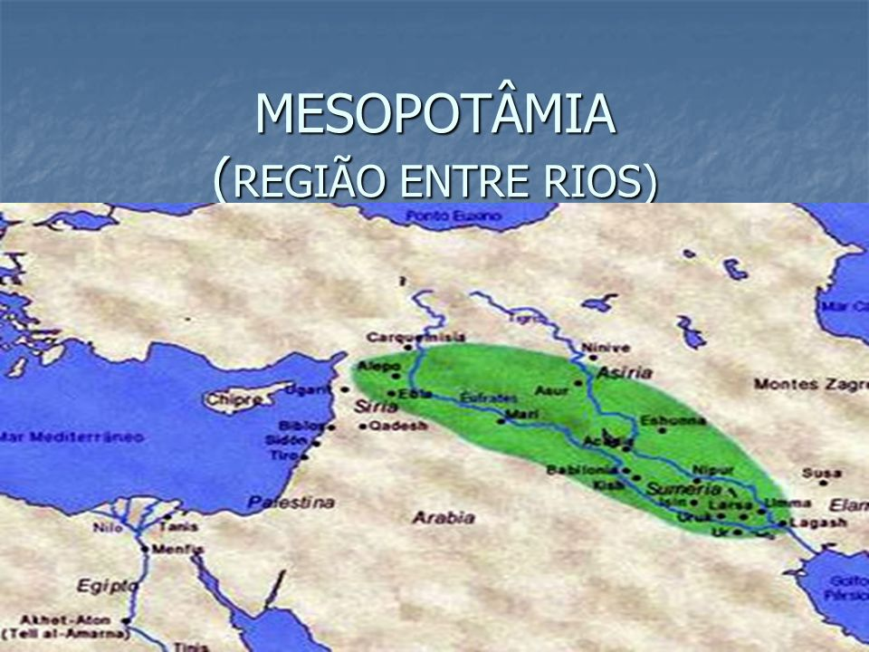

As primeiras grandes civilizações da história surgiram nas chamadas "regiões de regadio" (ou civilizações hidráulicas). Elas dependiam diretamente de grandes rios para a agricultura, o transporte e o abastecimento.
Localizada entre os rios Tigre e Eufrates (no atual Iraque), a Mesopotâmia não era um império único, mas uma coleção de cidades-estado (como Suméria, Acádia, Babilônia e Assíria).
Como disse o historiador Heródoto: "O Egito é uma dádiva do Nilo". O rio Nilo, com suas cheias anuais, permitia a vida em pleno deserto do Saara.
Questão 1 (Enem - Adaptada)
A importância dos rios para as civilizações da Mesopotâmia e do Egito Antigo era fundamental para a sobrevivência desses povos. Qual era a principal função desses rios na organização econômica dessas sociedades?
A) Serviam apenas como barreiras naturais para proteção contra exércitos inimigos.
B) Permitiam a irrigação de terras áridas, o fornecimento de água e o transporte de mercadorias, essenciais para a agricultura.
C) Eram considerados divindades que proibiam a prática da agricultura nas suas margens.
D) Eram utilizados apenas para a prática de esportes náuticos pelos reis e faraós.
Questão 2 (Enem - Adaptada)
Sobre a organização política e social no Egito Antigo, assinale a alternativa correta:
A) O poder era dividido de forma igualitária entre todos os cidadãos da sociedade egípcia.
B) O Faraó possuía poder ilimitado e era visto como um representante dos deuses, caracterizando uma monarquia teocrática.
C) A religião não possuía nenhuma influência na vida política ou na construção de monumentos.
D) Os escravos eram os únicos responsáveis pelas decisões políticas do império.